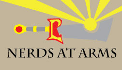
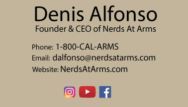
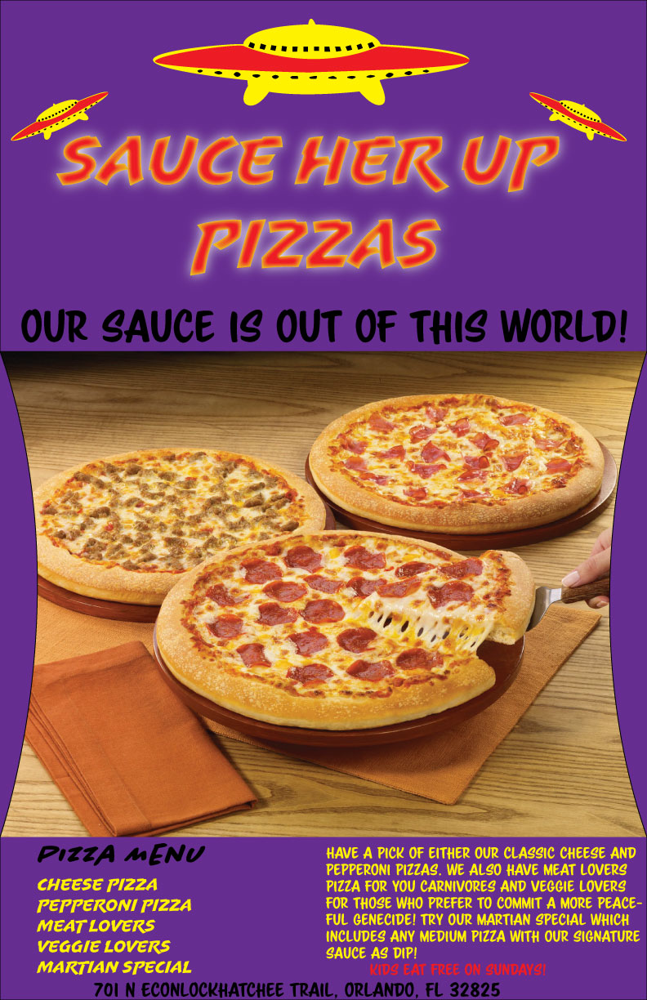

The movie poster to the left was one of my first projects in my intro to digital media class. In this project we could make a movie poster out of anything that isn't already a movie. I chose the game Darksiders 2 because it has amazing story and enough action pact adventure to make an amazing film.
I found the original picture on google by searching for darksiders cosplay. I found one of someone cosplaying as death and I thought the location made it look like it came straight out of the game.

Multiplicity is a photoshop technique where you take multiple photos of yourself in different parts of a room. The magic to this effect is that the camera has to be completely still while taking it and you have to make sure your position in each photo isn't overlapping (usually). Getting the overlapping versions of me just right was the most difficult part of this project.


Nerds At Arms is a fictional company I made in order to design a business card. I traced the sword Ashbringer from the popular MMO World of Warcraft to make the design. I'm not really sure what the business is suppose to be for, but the name is inspired by the Man At Arms youtube channel.
I added light rays coming out of the sphere towards the end of the sword for effect. In the game it actually glows and I even animated a light effect using after effect which you can find in the video section of this website. Feel free to check it out.

I had a hard time figuring out a concept for this restaurant flyer project. In the end, my humor bled through and I made a restaurant name that has 3-4 meanings behind it. I won't bother explaining them all and will leave figuring it out to you. The most obvious ones are the flying saucers and the fact that pizzas have sauce in them (genious right?).
I used shapes to make the curves on the left and right of the pizza in order to make it seem less square and plain. I found the font online and modified it to make it stand out for the title. I later found out that the yellow letters are kind of hard to read but for the most part I think it was an interesting flyer.